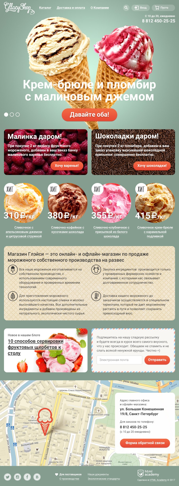

-

gllacy
Верстка: Резиновая Браузеры: Все популярные, IE 10+, Safari 8+ Страницы: Главная, каталог Описание: Верстка подстраивается под размер окна браузера в диапазонах 900px - 1200px. На некоторых элементах присутствуют ховеры. Работают кнопки для вызова модальных окон. Слайдер на главной меняет цвет страницы. -
 nerds
nerds
Верстка: Статичная Браузеры: Все популярные, IE 10+, Safari 8+ Страницы: Главная, Магазин Описание: Верстка содержит страницу магазина. На некоторых элементах присутствуют ховеры. Переключение картинок слайдера по радиобаттонам. Кликабельны кнопка "Напишите нам" и маркер на карте. -
 barbershop
barbershop
Верстка: Статичная Браузеры: Все популярные, IE 10+, Safari 8+ Страницы: Главная, Магазин, Товар Описание: Верстка содержит главную страницу, магазин и страницу доступного товара. На некоторых элементах присутствуют ховеры. Кнопки "вход" и "как проехать" кликабельны. -
 keksby
keksby
Верстка: Статичная Браузеры: Все популярные, IE 10+, Safari 8+ Страницы: Главная Описание: Верстка содержит одну главную страницу. На некоторых элементах присутствуют ховеры.